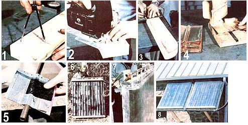

[1] Set your compass for the width of the 2 X 4 (about 3-1/2"") and scribe an arc that goes from one corner of the board to the edge. [2] Trim the wood along the line with a saber (or coping) saw. [3] Mark off the 1/2""holes on 5-7/8""centers. [4] Press a groove into the fins (this photo shows the copper version). [5J The aluminum plates are sandwiched around the tubes and stapled. (6] A completed absorber plate assembly is ready for glazing. [7] Hinges allow us to adjust our collectors for sun angle. [8] Cold water enters at the bottom right, while solarheated fluid exits from the top left side of the mounted collector array.